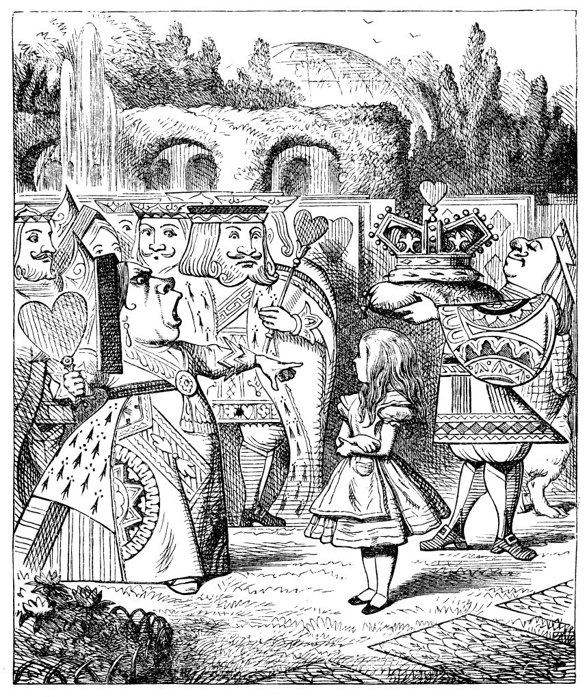

The Queen’s Croquet-Ground
A large rose-tree stood near the entrance of the garden: the roses growing on it were white, but there were three gardeners at it, busily painting them red. Alice thought this a very curious thing, and she went nearer to watch them, and just as she came up to them she heard one of them say, “Look out now, Five! Don”t go splashing paint over me like that!”
“I couldn’t help it,” said Five, in a sulky tone; “Seven jogged my elbow.”
On which Seven looked up and said, “That’s right, Five! Always lay the blame on others!”
“YOU’D better not talk!” said Five. “I heard the Queen say only yesterday you deserved to be beheaded!”
“What for?” said the one who had spoken first.
“That”s none of YOUR business, Two!” said Seven.
“Yes, it IS his business!” said Five, “and I”ll tell him – it was for bringing the cook tulip-roots instead of onions.”
Seven flung down his brush, and had just begun “Well, of all the unjust things–” when his eye chanced to fall upon Alice, as she stood watching them, and he checked himself suddenly: the others looked round also, and all of them bowed low.
“Would you tell me,” said Alice, a little timidly, “why you are painting those roses?”
Five and Seven said nothing, but looked at Two. Two began in a low voice,“ Why the fact is, you see, Miss, this here ought to have been a RED rose-tree, and we put a white one in by mistake; and if the Queen was to find it out, we should all have our heads cut off, you know. So you see, Miss, we”re doing our best, afore she comes, to–‘ At this moment Five, who had been anxiously looking across the garden, called out “The Queen! The Queen!” and the three gardeners instantly threw themselves flat upon their faces. There was a sound of many footsteps, and Alice looked round, eager to see the Queen.
First came ten soldiers carrying clubs; these were all shaped like the three gardeners, oblong and flat, with their hands and feet at the corners: next the ten courtiers; these were ornamented all over with diamonds, and walked two and two, as the soldiers did. After these came the royal children; there were ten of them, and the little dears came jumping merrily along hand in hand, in couples: they were all ornamented with hearts. Next came the guests, mostly Kings and Queens, and among them Alice recognised the White Rabbit: it was talking in a hurried nervous manner, smiling at everything that was said, and went by without noticing her. Then followed the Knave of Hearts, carrying the King”s crown on a crimson velvet cushion; and, last of all this grand procession, came THE KING AND QUEEN OF HEARTS.
Alice was rather doubtful whether she ought not to lie down on her face like the three gardeners, but she could not remember every having heard of such a rule at processions; “and besides, what would be the use of a procession,” thought she, “if people had all to lie down upon their faces, so that they couldn’t see it?” So she stood still where she was, and waited.
When the procession came opposite to Alice, they all stopped and looked at her, and the Queen said severely “Who is this?” She said it to the Knave of Hearts, who only bowed and smiled in reply.
“Idiot!” said the Queen, tossing her head impatiently; and, turning to Alice, she went on, “What’s your name, child?”
“My name is Alice, so please your Majesty,” said Alice very politely; but she added, to herself, “Why, they”re only a pack of cards, after all. I needn”t be afraid of them!”
“And who are THESE?” said the Queen, pointing to the three gardeners who were lying round the rosetree; for, you see, as they were lying on their faces, and the pattern on their backs was the same as the rest of the pack, she could not tell whether they were gardeners, or soldiers, or courtiers, or three of her own children.
“How should I know?” said Alice, surprised at her own courage. “It’s no business of MINE.”
The Queen turned crimson with fury, and, after glaring at her for a moment like a wild beast, screamed “Off with her head! Off–”
“Nonsense!” said Alice, very loudly and decidedly, and the Queen was silent.
The King laid his hand upon her arm, and timidly said “Consider, my dear: she is only a child!”
The Queen turned angrily away from him, and said to the Knave “Turn them over!”
The Knave did so, very carefully, with one foot.
“Get up!” said the Queen, in a shrill, loud voice, and the three gardeners instantly jumped up, and began bowing to the King, the Queen, the royal children, and everybody else.
“Leave off that!” screamed the Queen. “You make me giddy.” And then, turning to the rose-tree, she went on, “What HAVE you been doing here?”
“May it please your Majesty,” said Two, in a very humble tone, going down on one knee as he spoke, “we were trying–”
“I see!” said the Queen, who had meanwhile been examining the roses. “Off with their heads!” and the procession moved on, three of the soldiers remaining behind to execute the unfortunate gardeners, who ran to Alice for protection.
“You shan’t be beheaded!” said Alice, and she put them into a large flower-pot that stood near. The three soldiers wandered about for a minute or two, looking for them, and then quietly marched off after the others.
“Are their heads off?” shouted the Queen.
“Their heads are gone, if it please your Majesty!” the soldiers shouted in reply.
“That’s right!” shouted the Queen. “Can you play croquet?”
The soldiers were silent, and looked at Alice, as the question was evidently meant for her.
“Yes!” shouted Alice.
“Come on, then!” roared the Queen, and Alice joined the procession, wondering very much what would happen next.
“It’s–it’s a very fine day!” said a timid voice at her side. She was walking by the White Rabbit, who was peeping anxiously into her face.
“Very,” said Alice: “–where”s the Duchess?”
“Hush! Hush!” said the Rabbit in a low, hurried tone. He looked anxiously over his shoulder as he spoke, and then raised himself upon tiptoe, put his mouth close to her ear, and whispered “She”s under sentence of execution.”
“What for?” said Alice.
“Did you say “What a pity!”?” the Rabbit asked.
“No, I didn’t,” said Alice: “I don’t think it’s at all a pity. I said “What for?”‘
“She boxed the Queen”s ears–‘ the Rabbit began. Alice gave a little scream of laughter. “Oh, hush!” the Rabbit whispered in a frightened tone. “The Queen will hear you! You see, she came rather late, and the Queen said–”
“Get to your places!” shouted the Queen in a voice of thunder, and people began running about in all directions, tumbling up against each other; however, they got settled down in a minute or two, and the game began. Alice thought she had never seen such a curious croquet-ground in her life; it was all ridges and furrows; the balls were live hedgehogs, the mallets live flamingoes, and the soldiers had to double themselves up and to stand on their hands and feet, to make the arches.
The chief difficulty Alice found at first was in managing her flamingo: she succeeded in getting its body tucked away, comfortably enough, under her arm, with its legs hanging down, but generally, just as she had got its neck nicely straightened out, and was going to give the hedgehog a blow with its head, it WOULD twist itself round and look up in her face, with such a puzzled expression that she could not help bursting out laughing: and when she had got its head down, and was going to begin again, it was very provoking to find that the hedgehog had unrolled itself, and was in the act of crawling away: besides all this, there was generally a ridge or furrow in the way wherever she wanted to send the hedgehog to, and, as the doubled-up soldiers were always getting up and walking off to other parts of the ground, Alice soon came to the conclusion that it was a very difficult game indeed.
The players all played at once without waiting for turns, quarrelling all the while, and fighting for the hedgehogs; and in a very short time the Queen was in a furious passion, and went stamping about, and shouting “Off with his head!” or “Off with her head!” about once in a minute.
Alice began to feel very uneasy: to be sure, she had not as yet had any dispute with the Queen, but she knew that it might happen any minute, “and then,” thought she, “what would become of me? They’re dreadfully fond of beheading people here; the great wonder is, that there’s any one left alive!”
She was looking about for some way of escape, and wondering whether she could get away without being seen, when she noticed a curious appearance in the air: it puzzled her very much at first, but, after watching it a minute or two, she made it out to be a grin, and she said to herself “It”s the Cheshire Cat: now I shall have somebody to talk to.”
“How are you getting on?” said the Cat, as soon as there was mouth enough for it to speak with.
Alice waited till the eyes appeared, and then nodded. “It’s no use speaking to it,” she thought, “till its ears have come, or at least one of them.” In another minute the whole head appeared, and then Alice put down her flamingo, and began an account of the game, feeling very glad she had someone to listen to her. The Cat seemed to think that there was enough of it now in sight, and no more of it appeared.
“I don’t think they play at all fairly,” Alice began, in rather a complaining tone, “and they all quarrel so dreadfully one can’t hear oneself speak–and they don”t seem to have any rules in particular; at least, if there are, nobody attends to them–and you’ve no idea how confusing it is all the things being alive; for instance, there’s the arch I’ve got to go through next walking about at the other end of the ground–and I should have croqueted the Queen’s hedgehog just now, only it ran away when it saw mine coming!”
“How do you like the Queen?” said the Cat in a low voice.
“Not at all,” said Alice: “she’s so extremely–” Just then she noticed that the Queen was close behind her, listening: so she went on, “–likely to win, that it”s hardly worth while finishing the game.”
The Queen smiled and passed on.
“Who ARE you talking to?” said the King, going up to Alice, and looking at the Cat”s head with great curiosity.
“It’s a friend of mine – a Cheshire Cat,” said Alice: “allow me to introduce it.”
“I don’t like the look of it at all,” said the King: “however, it may kiss my hand if it likes.”
“I’d rather not,” the Cat remarked.
“Don”t be impertinent,” said the King, “and don’t look at me like that!” He got behind Alice as he spoke.
“A cat may look at a king,” said Alice. “I’ve read that in some book, but I don’t remember where.”
“Well, it must be removed,” said the King very decidedly, and he called the Queen, who was passing at the moment, “My dear! I wish you would have this cat removed!”
The Queen had only one way of settling all difficulties, great or small. “Off with his head!” she said, without even looking round.
“I”ll fetch the executioner myself,” said the King eagerly, and he hurried off.
Alice thought she might as well go back, and see how the game was going on, as she heard the Queen”s voice in the distance, screaming with passion. She had already heard her sentence three of the players to be executed for having missed their turns, and she did not like the look of things at all, as the game was in such confusion that she never knew whether it was her turn or not. So she went in search of her hedgehog.
The hedgehog was engaged in a fight with another hedgehog, which seemed to Alice an excellent opportunity for croqueting one of them with the other: the only difficulty was, that her flamingo was gone across to the other side of the garden, where Alice could see it trying in a helpless sort of way to fly up into a tree.
By the time she had caught the flamingo and brought it back, the fight was over, and both the hedgehogs were out of sight: “but it doesn”t matter much,” thought Alice, “as all the arches are gone from this side of the ground.” So she tucked it away under her arm, that it might not escape again, and went back for a little more conversation with her friend.
When she got back to the Cheshire Cat, she was surprised to find quite a large crowd collected round it: there was a dispute going on between the executioner, the King, and the Queen, who were all talking at once, while all the rest were quite silent, and looked very uncomfortable.
The moment Alice appeared, she was appealed to by all three to settle the question, and they repeated their arguments to her, though, as they all spoke at once, she found it very hard indeed to make out exactly what they said.
The executioner’s argument was, that you couldn’t cut off a head unless there was a body to cut it off from: that he had never had to do such a thing before, and he wasn’t going to begin at HIS time of life.
The King’s argument was, that anything that had a head could be beheaded, and that you weren”t to talk nonsense.
The Queen’s argument was, that if something wasn”t done about it in less than no time she”d have everybody executed, all round. (It was this last remark that had made the whole party look so grave and anxious.)
Alice could think of nothing else to say but “It belongs to the Duchess: you”d better ask HER about it.”
“She’s in prison,” the Queen said to the executioner: “fetch her here.” And the executioner went off like an arrow.
The Cat’s head began fading away the moment he was gone, and, by the time he had come back with the Duchess, it had entirely disappeared; so the King and the executioner ran wildly up and down looking for it, while the rest of the party went back to the game.